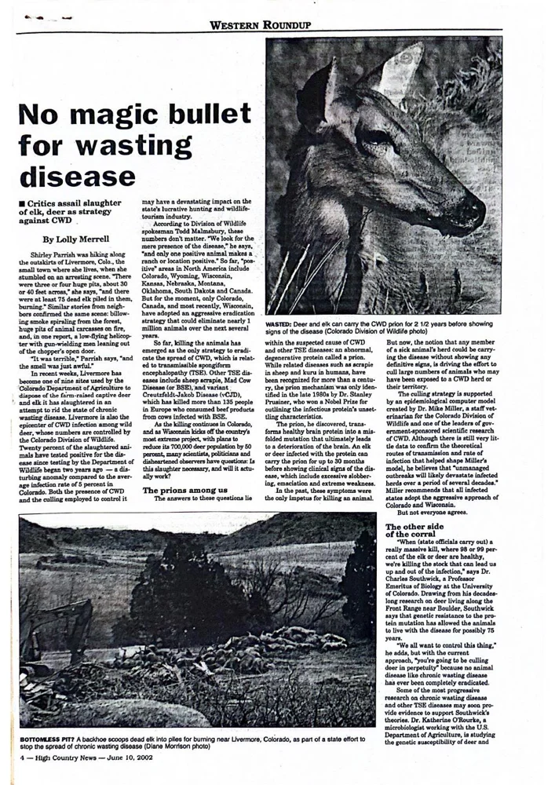

No Magic Bullet for Wasting Disease

Reporting on the debate over culling deer and elk to control chronic wasting disease, and the scientific questions surrounding the strategy.
View PDF here »PDF · 3.1 MB← Back to Science, Environment and Culture